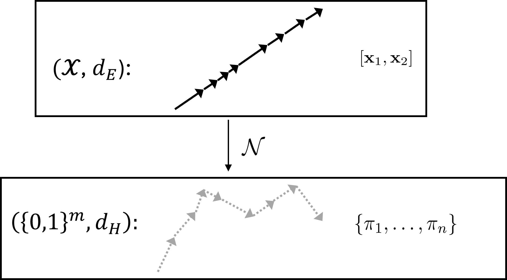
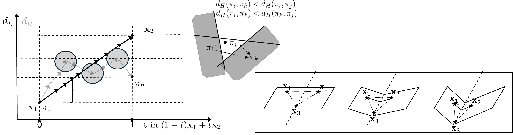

Overview
In nature, some quantities are preserved across transformations: energy, momentum, and so on. These are formalized as conservation laws in physics, like energy conservation or momentum conservation. The observation of such invariants enabled the discovery of fundamental physical theories and helped organize them around these preserved quantities, which in turn enabled predictions and a better understanding of the surrounding world. While preservation of physical quantities is a fundamental principle in physics, and is frequently formalized by Noether's theorem as symmetries of a system (as in classical mechanics), these preservation principles remain testable under a suitable experimental design. Similarly, in mathematics, one often studies which mathematical structures are preserved under a given transformation, such as which properties of a function are preserved under composition, or which geometric structures are preserved under a mapping. One of the fundamental structures in mathematics is convexity: a set is convex if for any two points in the set, the whole segment between them also belongs to the set. Convexity is preserved under linear transformations, but not necessarily under nonlinear transformations. In this paper, we studied under which conditions convexity is preserved when a ReLU neural network maps continuous input space into its discrete activation-pattern structure, and how this translates to the properties of the network in terms of its performance and generalization capacity. We further introduced a measure of deviation from convexity $\chi$ along a path $\Gamma$, which we call the space folding measure; it captures how much the network's mapping of input space into activation-pattern space fails to preserve convexity.
We start with a straight path between two points \(x_0\) and \(x_1\) in input space, \[ \gamma(t)=(1-t)x_0+t x_1,\qquad t\in[0,1]. \] We then map $\gamma(t)$ through a (trained) ReLU neural network, obtaining a sequence of activation regions $\Gamma=(\pi_1,\ldots,\pi_n)$, for $n$ intermediate points. Each activation region corresponds to a particular pattern of which neurons are active or inactive, denoted by 1 or 0, respectively. We then define \[ \chi(\Gamma):=1-\frac{r_1(\Gamma)}{r_2(\Gamma)},\qquad r_1(\Gamma)=\max_{i\in\{1,\ldots,n\}} d_H(\pi_1,\pi_i),\qquad r_2(\Gamma)=\sum_{i=1}^{n-1} d_H(\pi_i,\pi_{i+1}). \] Here \(r_1\) is the largest Hamming distance from the starting pattern reached along the walk, and \(r_2\) is the total Hamming distance traveled. If a straight input segment maps to a shortest monotone walk in activation space, then \(r_1=r_2\) and \(\chi=0\). When the distance to the start increases and then decreases, the walk spends distance without moving farther from its origin; \(\chi\) records this "excess" travel. For nontrivial paths, \(\chi\in[0,1]\).

We then link $\chi$ to the generalization capacity of the network and show its sensitivity to the compactness of the representation in the Kolmogorov sense. A follow-up work, Exploiting Space Folding by Neural Networks, extends the measure beyond ReLU networks and studies its connection to adversarial geometry.

Our work was also featured in the TLDR AI Newsletter.
BibTeX
@article{lewandowski2025spacefolds,
title = {On Space Folds of {ReLU} Neural Networks},
author = {Lewandowski, Michal and Eghbalzadeh, Hamid and Heinzl, Bernhard and Pisoni, Raphael and Moser, Bernhard A.},
journal = {Transactions on Machine Learning Research},
year = {2025},
url = {https://openreview.net/forum?id=RfFqBXLDQk}
}